Play
Drawing and graphic design, made for class and for fun.
Intro to Drawing
RCARTS 240 with Toby Millman. The course treats drawing as visual inquiry, balancing foundational exercises with projects that build a personal style.
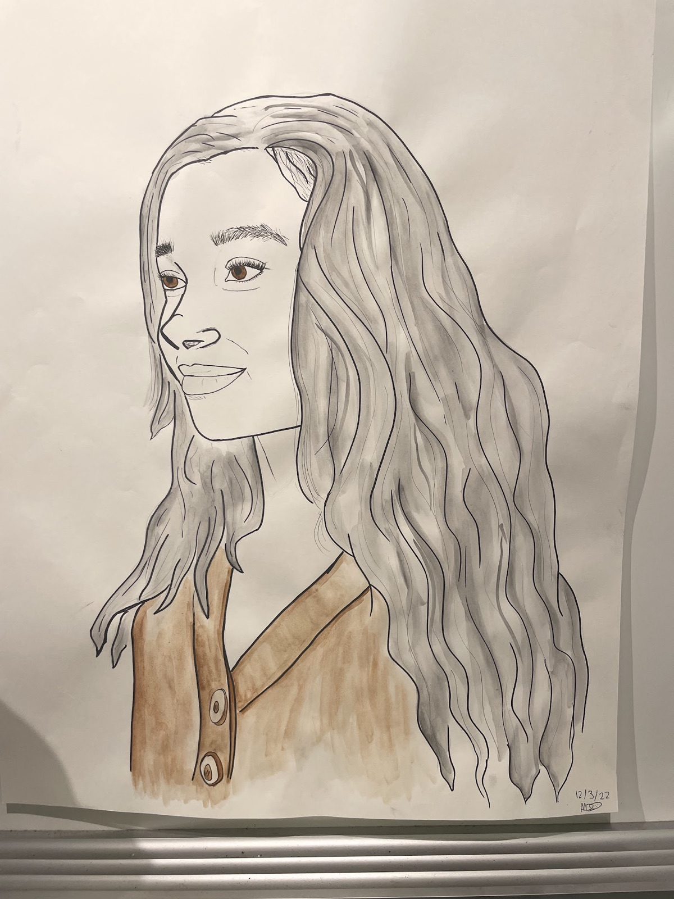
Karis 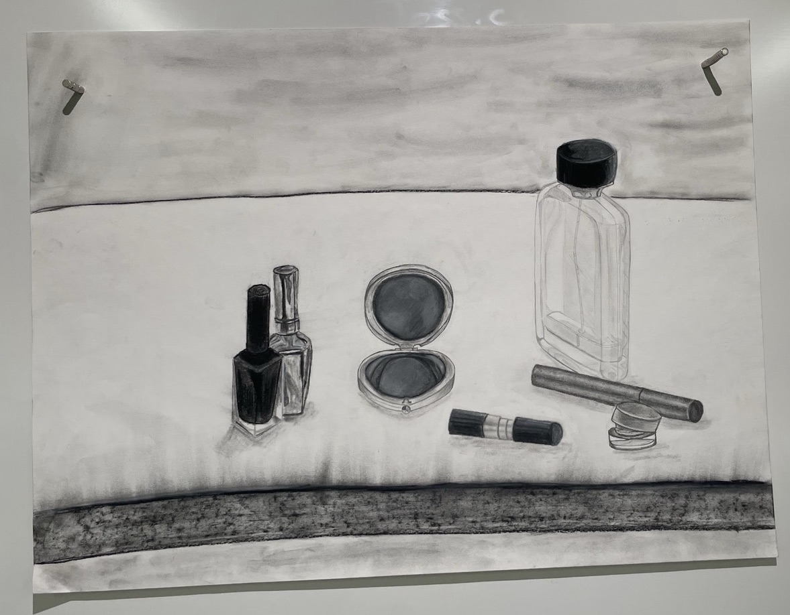
Makeup in charcoal 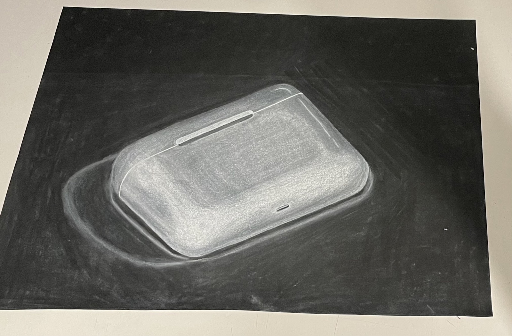
AirPods case 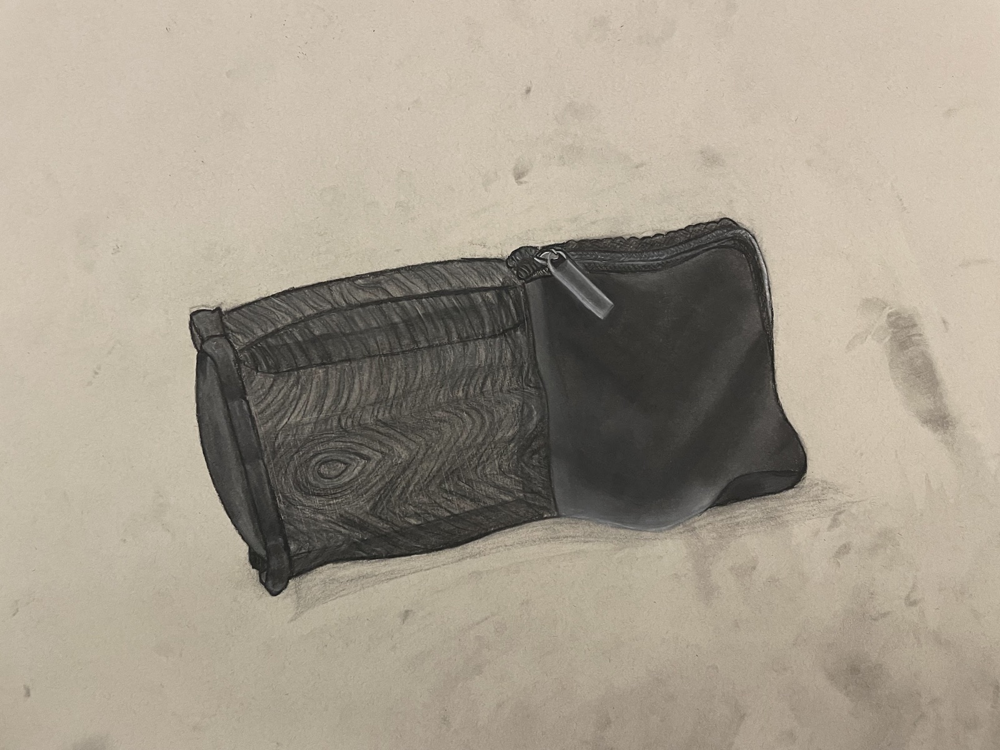
Pencil case 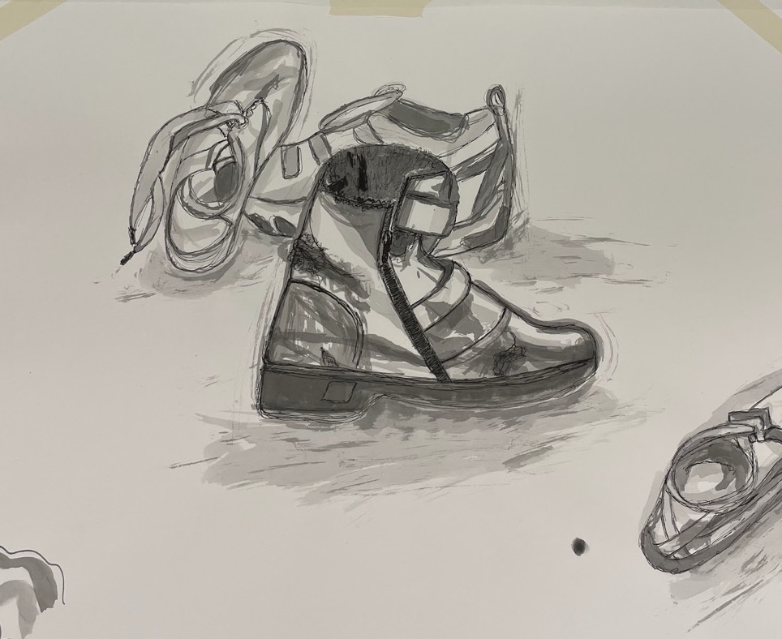
Ink and boots 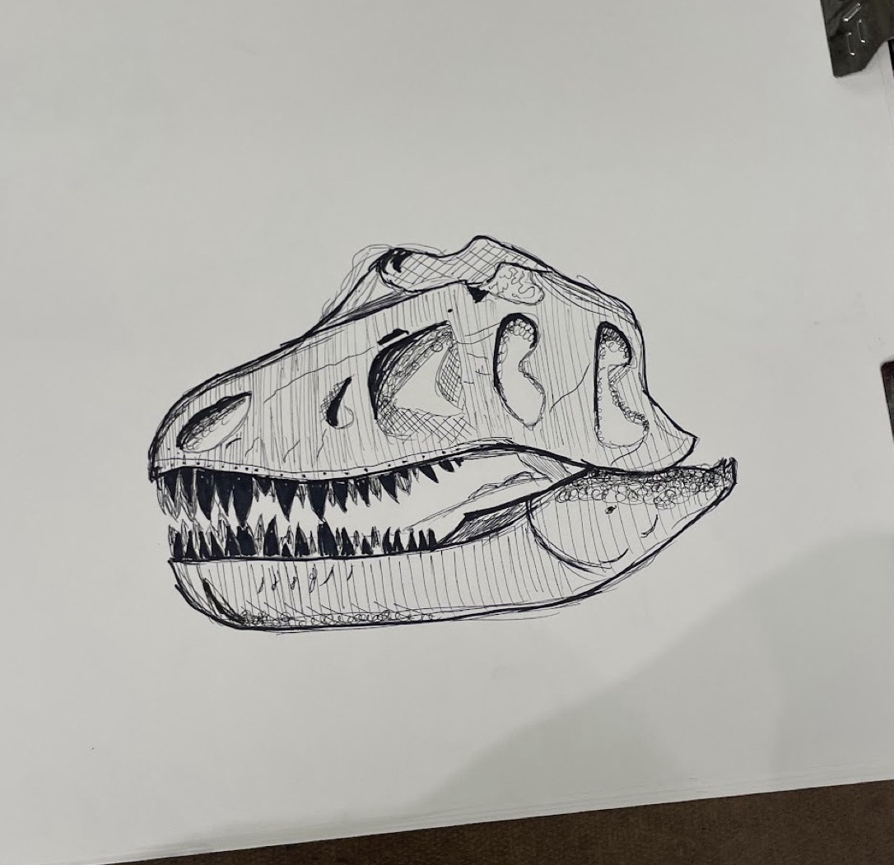
Dino 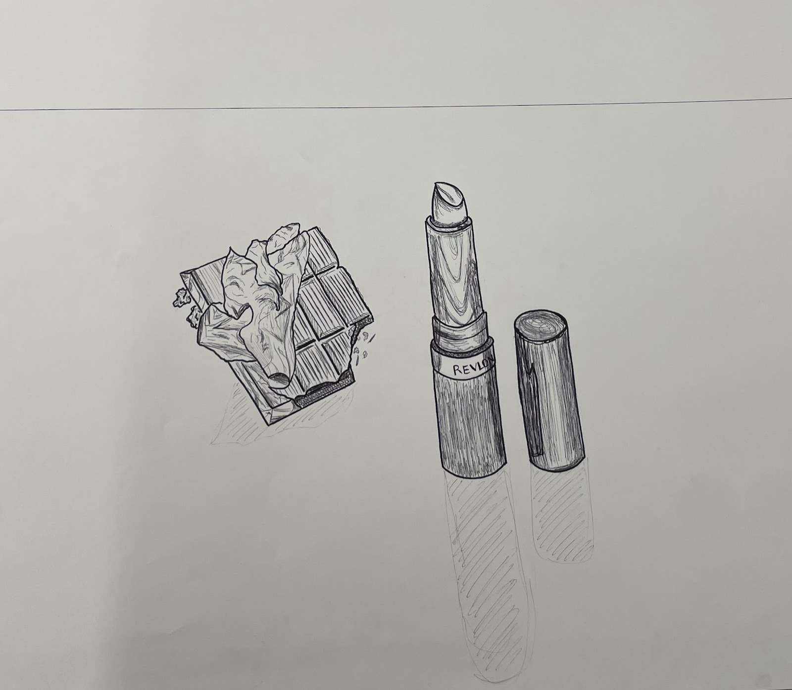
Makeup in Sharpie and pen 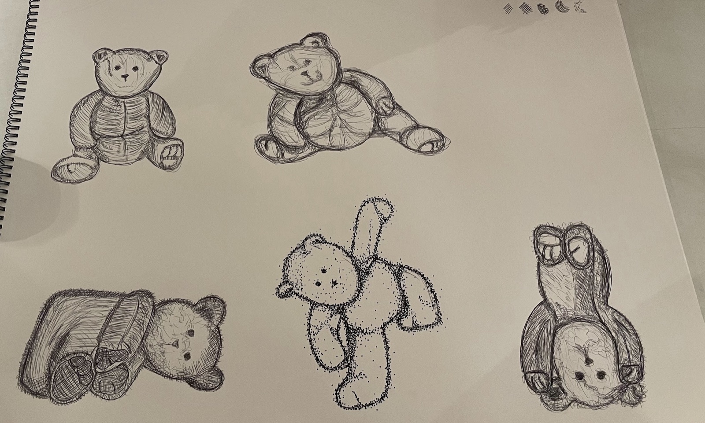
Basics with Teddy Bear 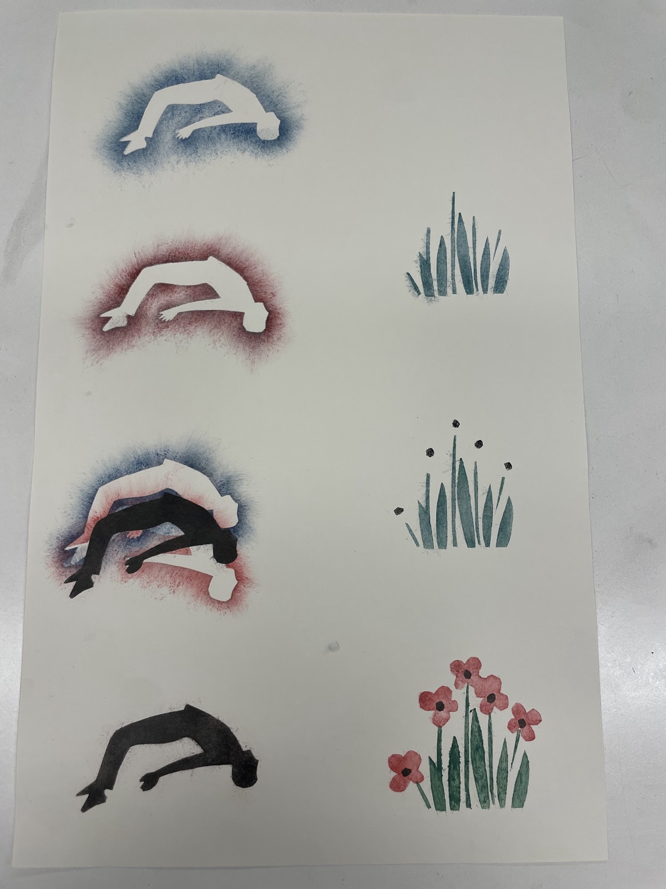
Stencil work 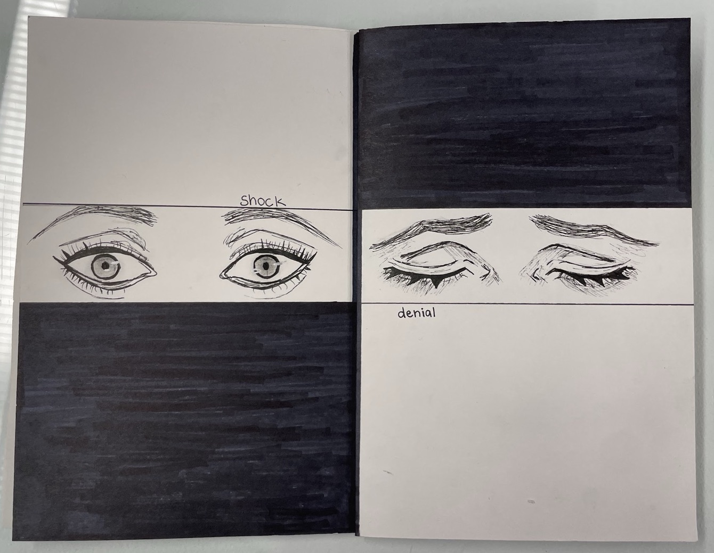
Zine
Graphic Design I
Work from Graphic Design I at the University of Michigan School of Information.
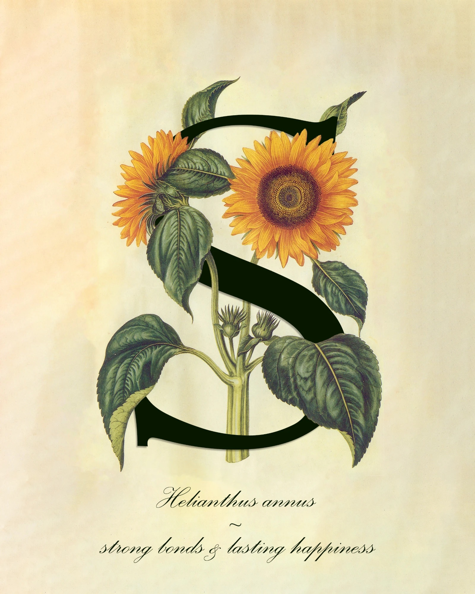
Botanical monogram 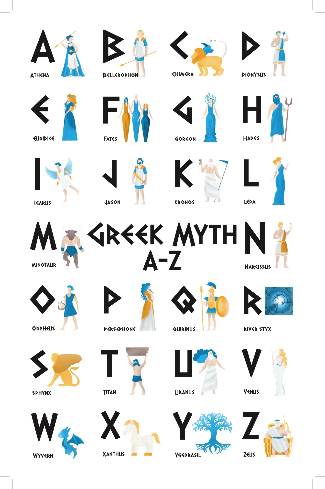
Greek Myth A to Z 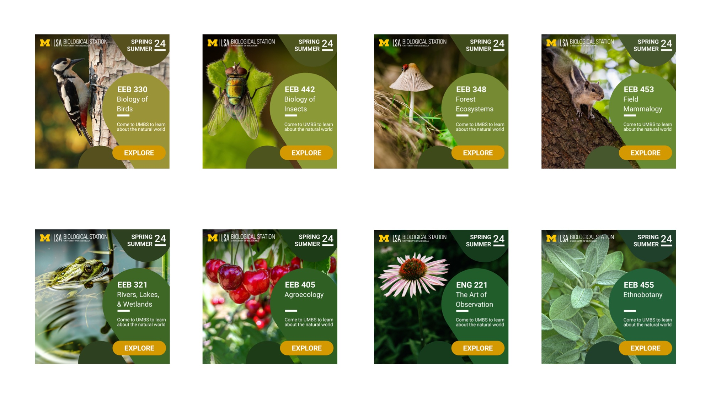
Biological Station course posts